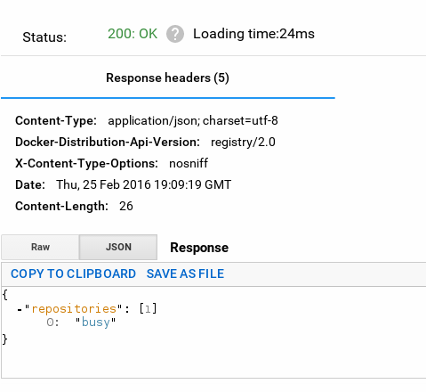

Por ahí he leído toda la infraestructura que es necesaria instalar para tener un sistema de registro privado de imágenes de Docker.
Pero no, usemos Docker!!!
Con esta idea se puede bajar una imagen del registro de Docker del siguiente enlace.
Antes de continuar les dejaré la lista de artículos sobre Docker que he tocado en el blog:
Lo primero que se hará es bajar la imagen Docker del registro, se tiene la versión oficial que es la 2 o la última.
$docker pull registry:2
ó
$docker pull registry
Se inicia el contenedor en el puerto 5000:
$ docker run -d -p 5000:5000 registry:2
3c0719746d75f46220328c08209b3e716c8e883ad6f3df7bbae0d70e50656a45
Para verificar que el registro está corriendo se prueba con curl conectarse a localhost al puerto 5000 a v2/:
$ curl -i http://localhost:5000/v2/
HTTP/1.1 200 OK
Content-Length: 2
Content-Type: application/json; charset=utf-8
Docker-Distribution-Api-Version: registry/2.0
X-Content-Type-Options: nosniff
Date: Thu, 25 Feb 2016 18:40:25 GMT
Ahora se puede probar subir una imagen al sistema privado de registro, se prueba con busybox:
Se crea un tag:
$docker tag busybox localhost:5000/busy
Se sube la imagen:
$ docker push localhost:5000/busy
The push refers to a repository [localhost:5000/busy]
5f70bf18a086: Pushed
9508eff2c687: Pushed
latest: digest: sha256:b58c00d636b25f40fc7605b1b807af81c1a79a7bbb2179b4753b9dc7e0d1dcd7 size: 711
Para poder acceder de manera insegura al registro privado se tiene que modificar el archivo /etc/default/docker y agregar la siguiente línea (tomar en cuenta que el contenedor está corriendo en localhost):
DOCKER_OPTS="--insecure-registry localhost:5000"
Se reinicia el servicio de docker:
# service docker restart
Para más información de las opciones del registro de Docker pueden revisar el siguiente enlace.
Para revisar las imagenes almacenadas en el sistema de registro privado se ejecuta:
curl http://localhost:5000/v2/_catalog
{"repositories":["busy"]}

El catalogo muestra que se tiene la imagen busy.
Se puede crear otra tag de busybox con nombre busy1 y se sube al servidor:
$docker tag busybox localhost:5000/busy1
$ docker push localhost:5000/busy1
The push refers to a repository [localhost:5000/busy1]
5f70bf18a086: Mounted from busy
9508eff2c687: Mounted from busy
latest: digest: sha256:b58c00d636b25f40fc7605b1b807af81c1a79a7bbb2179b4753b9dc7e0d1dcd7 size: 711
Al volver a consultar el catalogo se tienen dos imagenes:
$curl http://localhost:5000/v2/_catalog
{"repositories":["busy","busy1"]}
Cada imagen tiene un manifiesto:
$curl http://localhost:5000/v2/busy1/manifests/latest
$ curl http://localhost:5000/v2/busy1/manifests/latest
{
"schemaVersion": 1,
"name": "busy1",
"tag": "latest",
"architecture": "amd64",
"fsLayers": [
{
"blobSum": "sha256:a3ed95caeb02ffe68cdd9fd84406680ae93d633cb16422d00e8a7c22955b46d4"
},
{
"blobSum": "sha256:d7e8ec85c5abc60edf74bd4b8d68049350127e4102a084f22060f7321eac3586"
}
],
"history": [
{
"v1Compatibility": "{\"architecture\":\"amd64\",\"config\":{\"Hostname\":\"ea7fe68f39fd\",\"Domainname\":\"\",\"User\":\"\",\"Memory\":0,\"MemorySwap\":0,\"CpuShares\":0,\"Cpuset\":\"\",\"AttachStdin\":false,\"AttachStdout\":false,\"AttachStderr\":false,\"PortSpecs\":null,\"ExposedPorts\":null,\"Tty\":false,\"OpenStdin\":false,\"StdinOnce\":false,\"Env\":null,\"Cmd\":[\"sh\"],\"Image\":\"5c5fb281b01ee091a0fffa5b4a4c7fb7d358e7fb7c49c263d6d7a4e35d199fd0\",\"Volumes\":null,\"WorkingDir\":\"\",\"Entrypoint\":null,\"NetworkDisabled\":false,\"MacAddress\":\"\",\"OnBuild\":null,\"Labels\":null},\"container\":\"f63d86f7f85b3207532327b6e484bf09d8a0d1a0979cf7bdce1bd5268666fdd3\",\"container_config\":{\"Hostname\":\"ea7fe68f39fd\",\"Domainname\":\"\",\"User\":\"\",\"Memory\":0,\"MemorySwap\":0,\"CpuShares\":0,\"Cpuset\":\"\",\"AttachStdin\":false,\"AttachStdout\":false,\"AttachStderr\":false,\"PortSpecs\":null,\"ExposedPorts\":null,\"Tty\":false,\"OpenStdin\":false,\"StdinOnce\":false,\"Env\":null,\"Cmd\":[\"/bin/sh\",\"-c\",\"#(nop) CMD [\\\"sh\\\"]\"],\"Image\":\"5c5fb281b01ee091a0fffa5b4a4c7fb7d358e7fb7c49c263d6d7a4e35d199fd0\",\"Volumes\":null,\"WorkingDir\":\"\",\"Entrypoint\":null,\"NetworkDisabled\":false,\"MacAddress\":\"\",\"OnBuild\":null,\"Labels\":null},\"created\":\"2015-12-08T18:31:51.481948133Z\",\"docker_version\":\"1.8.3\",\"id\":\"a997905216262e309de0dccc4c8ed39ee475a9d0e6b3f3c3a40b4ccf28af9b15\",\"os\":\"linux\",\"parent\":\"3d030bd4e34f5ed0b05de21a56503d80881fb1464afdde1c06a2b39c59260a22\"}"
},
{
"v1Compatibility": "{\"id\":\"3d030bd4e34f5ed0b05de21a56503d80881fb1464afdde1c06a2b39c59260a22\",\"created\":\"2015-12-08T18:31:50.979824705Z\",\"container_config\":{\"Cmd\":[\"/bin/sh -c #(nop) ADD file:c295b0748bf05d4527f500b62ff269bfd0037f7515f1375d2ee474b830bad382 in /\"]}}"
}
],
"signatures": [
{
"header": {
"jwk": {
"crv": "P-256",
"kid": "FO3A:MIWL:JVJW:5O62:N7RK:GZXL:ACGC:WRUQ:PM4P:FVDL:PBAQ:X3IG",
"kty": "EC",
"x": "8eTT88WGU5NVLCrp5qGa4cO_nCo00e1L-eNLKF_0eeE",
"y": "QwgEYEkJDxz4vihT3Mc6OitZ9uraF_TwbfpvZm72dJ8"
},
"alg": "ES256"
},
"signature": "LkmuupCii3CgtJKkKbasvkKc1jo7V0rZP9k4EFXuVMQL08-7n8s8TWzNB_Wx8oTv4qMb-Bpqhv3A2jdemu6eSA",
"protected": "eyJmb3JtYXRMZW5ndGgiOjIyMTQsImZvcm1hdFRhaWwiOiJDbjAiLCJ0aW1lIjoiMjAxNi0wMi0yNVQxOToxNjoxNFoifQ"
}
]
}
Para listar todos los tags de una imagen se tiene:
$ curl http://localhost:5000/v2/busy1/tags/list
{"name":"busy1","tags":["latest"]}
$ curl http://localhost:5000/v2/busy/tags/list
{"name":"busy","tags":["latest"]}
Se puede hacer un pull del sistema de registro local para verificar que la imagen está actualizada:
$ docker pull localhost:5000/busy1
Using default tag: latest
latest: Pulling from busy1
Digest: sha256:b58c00d636b25f40fc7605b1b807af81c1a79a7bbb2179b4753b9dc7e0d1dcd7
Status: Image is up to date for localhost:5000/busy1:latest
Para más información del despliegue del sistema de registro pueden revisar el siguiente enlace.
¡Haz tu donativo! Si te gustó el artículo puedes realizar un donativo con Bitcoin (BTC) usando la billetera digital de tu preferencia a la siguiente dirección: 17MtNybhdkA9GV3UNS6BTwPcuhjXoPrSzV
O Escaneando el código QR desde la billetera:

Comments !